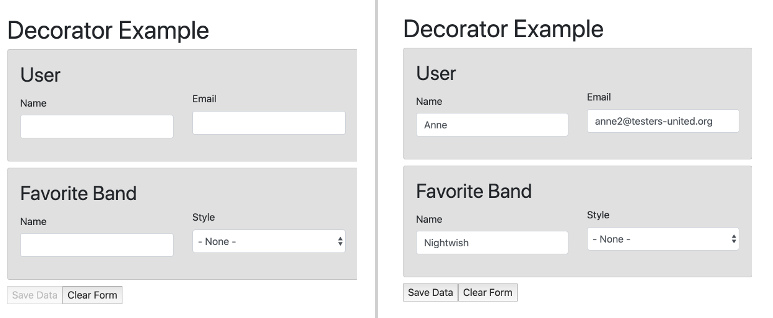

Angular Decorators to Create Mixable, Self-contained Functionality
In a previous post, I looked at Decorators and how they can be used to abstract often-used functionality, such as logging the parameters and results of method calls. In this post, I’ll extend that idea by creating a decorator set which works together to permit communication between individual form groups housed in individual components and the embedding component. Let’s start!
The Goal
To learn this technique, I came up with the somewhat out-there idea of creating form fragements that can be combined at will to create forms collecting different data. The form will look like the following screenshots, with the empty form on the left and the filled out form with an enabled Submit button on the right:

The two screenshots show a form consisting of two sections with intentionally very simple forms as a means for demonstrating this simple example: One fom collects user information and one information about a (musical) band. The unspoken context to this is that the two forms are independent of each other and should remain so. This will increase their reusability, as the underlying data can be collected in many different contexts: User information for account users, other users and band information for favorites, a band ranking etc.
The goal, then, is to make these form fragments reusable and manage the overall state in the embedding component, which will, once all required data is entered correctly, enable a save button.
The Approach
In this post, I’m going to use a decorator which implements form synchronization called @FormSync, which will be added to each individual form as well as the containing form. Its purpose is to permit communication of form events to and from the forms to the embedding component.
The Templates
The actual page template consists of regular HTML, but embeds the individual form fragments, which are implemented as Angular Components. Since the overall state is managed in this, let’s call it “root component”, the buttons to clear and submit should also be located here — The individual form fragments only know about their own state.
So with these requirements, we can set up the following template, which embeds the components for the two form segements we want to use:
<h1>Decorator Example</h1>
<div class="card">
<h2>User</h2>
<app-user-form></app-user-form>
</div>
<div class="card">
<h2>Favorite Band</h2>
<app-fave-band></app-fave-band>
</div>
<button (click)="storeFormData($event)"
[disabled]="!permitStoringForm">Save Data</button>
<button (click)="clearFormContent()">Clear Form</button>I’ll get back to the bindings on the buttons later. For now, let’s take a look at one of the actual form templates, e.g. UserFormComponent, which collects the user data. It implements an Angular Form Group and is standard Angular:
<div class="row" [formGroup]="userForm">
<div class="col-6 form-group">
<label class="col-form-label" for="name">Name</label>
<input type="text" id="name" class="form-control"
(blur)="onFormFieldLeave($event)"
formControlName="name"/>
</div>
<div class="col-6 form-group">
<label for="email">Email</label>
<input type="email" id="email" class="form-control"
(blur)="onFormFieldLeave($event)"
formControlName="email"/>
</div>
</div>The difference between this and the standard form implementation is the use and functionality of the (blur) event handler on the form fields, which is essential in this implementation to propagate changes in form values.
The Form’s TypeScript Controller
The method passed to the onBlur event is responsible for collecting the form group’s data, determine its validity and pass it on to whoever aggregates the data. In this case — where the form groups are independent of a form instance — all the form’s data should go to the embedding component, i.e. the root component, whose job it is to aggregate the data.
Let’s look at an abdriged version of the form’s controller:
@Component({ selector: 'app-user-form', ... })
export class UserFormComponent {
public userForm = this.fb.group({
name: ['', Validators.required],
email: ['', Validators.required],
});
constructor(public fb: FormBuilder) { }
public onFormFieldLeave(formEvent) {
const formValue: FormDataEntryEvent<UserType> = {
type: FormEventType.DATA_UPDATE,
id: 'user',
isValid: this.userForm.valid,
formData: this.userForm.getRawValue()
};
this.emitEvent(formValue);
}
}
There is the definition of the form group using the Reactive Form mechanosm provided by Angular and then the onFormFieldLeave() method we saw on the form element in the template.
The method only contains two instructions:
- The creation of an object of type
FormDataEntryEvent<UserType>, which specifies a type and an ID as well as stores the current values on whether the form in the template is valid and what its entered data is (informData'). - The emission of that object by calling a thus far undefined
emitEvent()method.
And that’s where we finally get to talk about the decorators.
The Decorators
The problem to solve here is to synchronize data between components. There are multiple ways to do that, e.g. through event and property binding, or — more elaborate and completely disproportional for this use case, a State Store. In this post, I’m going to talk about Angular Decorators to accomplish that goal. They allow abstracting the form communication functionality and thus make it generally usable for many use cases.
As seen in the introductory post on TypeScript decorators, they are simply functions which adhere to a certain interface, be it ClassDecorator or MethodDecorator and which can augment a class definition or wrap a method with custom functionality.
In this case, we want to use the same decorator to enable the exchange of information between multiple components. However, assigning a decorator to a class creates a new instance, so in order to be able to permit the exchange of ideas among mulitple classes, decorated with the same @Decorator, we need to reach into our functional programming box of tricks and use currying to achieve that goal in our class decorator.
Creating a Sychronizing Class Decorator
The following code creates the bones of a Class Decorator which includes the instantiation of an Rx.JS Subject on line 3. Through this Subject, which will be shared among all decorator instances, the communication between the various components is accomplished. The rest of the following code is simply boilerplate to set up the implementation of our custom class decorator called @FormSync:
export const FormSync: () => ClassDecorator = (function() {
const eventSubject = new Subject<FormEvent>();
return function buildingBlockFunctionality(): ClassDecorator {
return function(constructor: any) {
}
}
}To get an idea of which functionality we’re going to build into the Decorator, the following is the interface for the decorator:
export interface FormSyncInterface {
formEventStream: Observable<any>;
onEvent: (fct) => {};
emitEvent: (evt) => {};
clearForm: () => void;
}
export enum FormEventType {
DATA_UPDATE = 'FORM_DATA_UPDATE',
CLEAR = 'FORM_CLEAR',
SUBMIT = 'FORM_SUBMIT'
}This interface defines the following functionality:
- We expose the
Subjectwe just created to the outside as an Observable calledformEventStream - There will be an
onEventproperty on decorated classes, which will accept a function that then reacts to any events on the Observable/Subject - The
emitEventproperty, which we already saw in our component example, sending a data packet with form data to the Subject. - A
clearFormmethod, which we will use to communicate from the embedding template to all the form templates to clear themselves.
Also shown in the previous listing are the defined types for events that the system supports: The updating of data in the form, the clearing and of course the submission of the form data. We’ll see an example of this in a moment when it comes to resetting forms.
One of the important things we need to do is to send and receive events from the Rx Subject. For that purpose, we defined two methods on the interface, whose implementation looks like this (showing the implementation in the innermost function of the above skeleton):
return function(constructor: any) {
let eventSubscription;
constructor.prototype.formEventStream = eventSubject.asObservable();
constructor.prototype.onEvent =
function(rxOnNext: (x: FormDataEntryEvent<any>) => {}) {
if (!eventSubscription) {
eventSubscription = constructor.prototype.formEventStream
.subscribe({
next: rxOnNext
});
}
}
constructor.prototype.emitEvent = function(evt) {
eventSubject.next(evt);
};
};On line 2, we create a property to store a subscription to the Subject we created previously. On line 4, we expose an Observable based on that Subject for the user to subscribe to as needed. But in order to make this implementation more user friendly, we also implement the onEvent and emitEvent interface methods.
With onEvent, we set up an event listener on the Observable, accepting a method that will be invoked whenever an Rx.js event occurs. The emitEvent method does the exact opposite, which is to create an onNext event on the Subject with the provided data. So these two methods are the core of this functionality and provide a means to relay events to mulitple listeners who can then react according to their business logic.
With the basics out of the way, let’s talk about two more methods that the class decorator has. The first we already saw in the interface is the clearForm method, which communicates to the subforms to clear themselves and the other is housekeeping, which unsubscribes from the observable when the decorated class gets unloaded/destroyed:
const sourceOnDestroy = constructor.prototype.ngOnDestroy;
constructor.prototype.ngOnDestroy = function(...args) {
if (eventSubscription) {
eventSubscription.unsubscribe();
eventSubscription = null;
}
!!sourceOnDestroy && sourceOnDestroy.apply(this, args);
};
constructor.prototype.clearForm = function(formEvent: FormDataEntryEvent<any>) {
this.emitEvent({type: FormEventType.CLEAR});
};The first 9 lines implement the OnDestroy method, which stops the subscription and sets the reference to the subscription stored in that instance of the decorator to null before it calls any method defined on the Angular Component.
The clearForm method is straightforward in that it simply emits an event to the Subject, indicating to the forms to clear themselves.
Reacting to Form Events
We can now rewrite the component class for the user form as follows (omitting already explained code):
export interface UserFormComponent extends FormSyncInterface {}
@Component({ ... })
@FormSync()
export class UserFormComponent implements OnInit {
public userForm = this.fb.group({ ... });
constructor(public fb: FormBuilder) { }
ngOnInit() {
this.onEvent(this.onFormEvent.bind(this));
}
public onFormFieldLeave(formEvent) {
// as before
}
public onFormEvent(formEvent: FormEvent) {
switch (formEvent.type) {
case FormEventType.DATA_UPDATE:
break;
case FormEventType.CLEAR:
console.log('resetting user form');
this.userForm.reset();
break;
case FormEventType.SUBMIT:
break;
}
}
}
There are a few things here:
- As described in the previous post, to satisfy TypeScript’s typing mechanism, we need to declare an interface for the new component which extends the
FormSyncInterfacedefined before (line 1) - We added the Decorator for
@FormSync()before the class definition, thereby exposing all the decorator functionality in our component (line 4) - We are implementing the
onInitinterface, in which we set up the event listener for events from the other components using the decorator’sonEventmethod (lines 5 and 11-13) - We implement an action in
onFormEvent()to be triggered (here, the reset of the form) whenever aCLEARevent is received (this could have been accomplished with less code with anif, but I wanted to show all the available event types).
We’ve looked now at the templates in the beginning, dug into the component TypeScript code and then developed the class decorator @FormSync and looked how a form component would use it to communicate. What’s missing is how the embedding class uses the decorator to pull all the functionaiity together, as we’ve seen in the very first listing which shows the buttons to submit and clear the form. The corresponding component class looks like this:
export interface AppComponent extends FormSyncInterface {}
@Component({ ... })
@FormSync()
export class AppComponent implements OnInit, FormSyncInterface {
public aggregateData = {};
public permitStoringForm = false;
ngOnInit() {
this.onEvent(this.onFormEvent.bind(this));
this.initializeFormValues();
}
public initializeFormValues() {
this.aggregateData = {
band: {},
user: {}
};
}
public onFormEvent(formEvent: FormEvent) {
switch (formEvent.type) {
case FormEventType.DATA_UPDATE:
this.setSaveButtonState(formEvent as FormDataEntryEvent<any>);
break;
case FormEventType.CLEAR:
this.initializeFormValues();
this.permitStoringForm = false;
break;
}
}
public setSaveButtonState(formData: FormDataEntryEvent<any>) {
if (formData.isValid) {
const {type, id, ...dataStoreData} = formData;
this.aggregateData[id] = dataStoreData;
} else this.aggregateData[formData.id] = {};
const aggData = Object.values(this.aggregateData);
this.permitStoringForm = (aggData.reduce(this.isValid, true) as boolean);
}
public isValid(current: boolean, section): boolean {
return current && section.isValid;
}
public storeFormData(clickEvent: MouseEvent) {
const dataObj = {};
for (const prop in this.aggregateData) {
if (prop in this.aggregateData) {
dataObj[prop] = this.aggregateData[prop].formData;
}
}
console.log('storing form data', dataObj);
}
@ClearForm()
public clearFormContent(): boolean {
return window.confirm('Really Delete?');
}
}A lot going on, so let’s take a look:
- We also decorate with the
@FormSyncdecorator here and implement the appropriate interface to keep TypeScript happy - We create a data properties to hold all the form’s data (
aggregateData) as well as its validity status inpermitStoringForm. - We then set up an event handler,
onFormEvent(), which acts on the events to clear the form or whenever a form component emits a new value. - Whenever there is an update to the data, we en- or disable the “Save” button of the form through the
setSaveButtonState()method, which iterates over the form settings inaggregateDatawith areducefunction. - When the user presses the button to store the data, we cumulate the data in all the subforms “manually” into an object, which we in this case simply log out to the console instead of sending it to a server.
The final method is decorated with a method decorator and simply returns a boolean — The result of asking the user for confirmation. The @ClearForm decorator wraps this method body and looks as follows:
export function ClearForm(): MethodDecorator {
return function( target: any, key: string, descriptor: PropertyDescriptor ) {
const origMethod = descriptor.value;
descriptor.value = (...parameters) => {
const result = origMethod.apply(target, parameters);
if (result === true) target.clearForm();
};
return descriptor;
};
}It gets passed as the first parameter the target — a reference to the decorated class, which contains the decorated method. It then saves a reference to that method before overwriting its definition with a function that
- calls the original method and stores the result. Since this is a decorator for a method clearing the form, a boolean, on whether the user really wants to delete all entries makes sense, so the result is a boolean.
- If the return value of the method in the component class is
true, it proceeds to call theclearForm()method on the class, which as we saw is provided by our class decorator.
With the functionality of this decorator now clear, the implementation of the clearFormContent() method on the component class should now make sense.
Summary
In this post I have described how TypeScript Decorators can be used to group functionality into a coherent entity that can be mixed into Classes using TypeScript’s Decorator feature. Expanding on a previous post we saw how method and class decorators can act together to provide mixable entities in our system that are reminiscent of Scala Traits.
The code developed in this post is available in bitbucket.